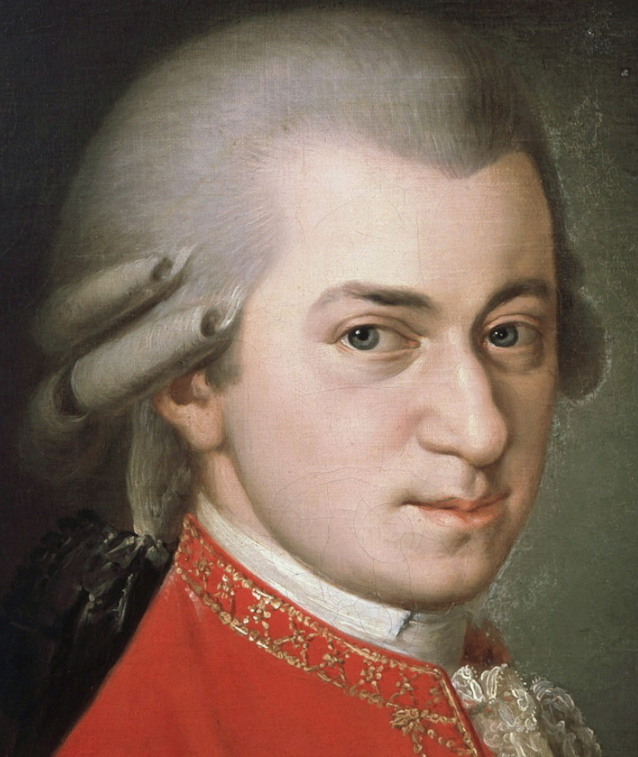
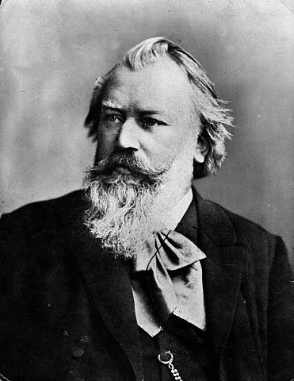
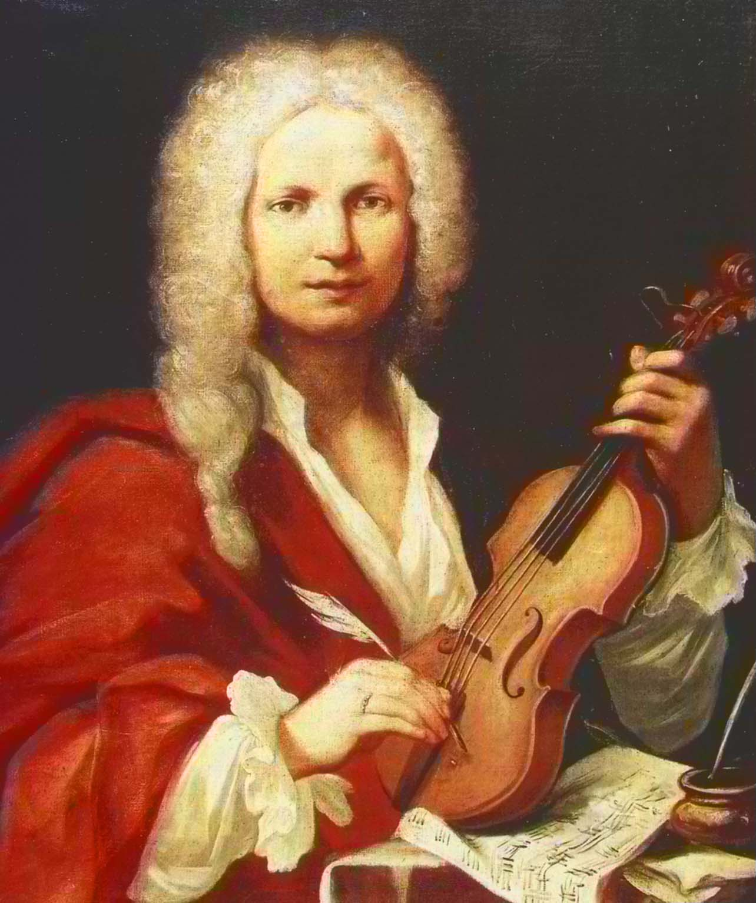

| Compositor | Año nacimiento/muerte | Obras destacadas | Retrato |
|---|---|---|---|
| Wolfang Amadeus Mozart | 1756 - 1791 | Ave Verum Corpus K 618
The Magic Flute |
 |
| Johann Sebastian Bach | 1685 - 1750 | Toccata and Fugue in D Minor
Little Fugue in G Minor |
|
| Ludwig van Beethoven | 1770 - 1827 | Moonlight Sonata
Für Elise |
 |
| Hueco libre | |||
| Johannes Brahms | 1833 - 1897 | Scherzo in E-Flat Minor, Op. 4
Hungarian Dance, No. 5 |
 |
| Antonio Lucio Vivaldi | 1678 - 1741 | Four Seasons
La Stravaganza |
 |
| Pyotr Ilyich Tchaikovsky | 1840 - 1893 | Dance of the Swans
Waltz of the Flowers |
|